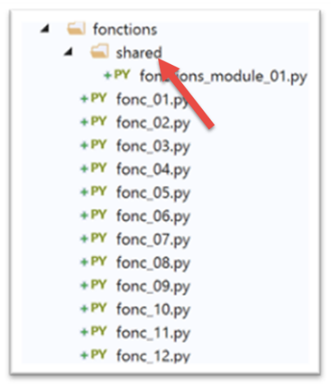
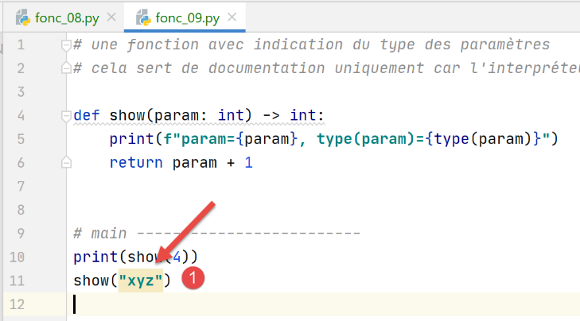

6. الوظائف

6.1. البرنامج النصي [fonc_01]: نطاق المتغيرات
يُظهر البرنامج النصي [fonc_01] أمثلة على نطاق المتغيرات بين الدوال:
النتائج
C:\Data\st-2020\dev\python\cours-2020\python3-flask-2020\venv\Scripts\python.exe C:/Data/st-2020/dev/python/cours-2020/python3-flask-2020/fonctions/fonc_01.py
f1[i,j]=[1,10]
f2[i,j]=[2,20]
f3[i,j]=[1,30]
[i,j]=[2,0]
Process finished with exit code 0
ملاحظات:
- يوضح البرنامج النصي استخدام المتغير i، الذي تم تعريفه كمتغير عام في الدالتين f1 و f2. في هذه الحالة، يتشارك البرنامج الرئيسي والدالتين f1 و f2 في استخدام المتغير i نفسه.
6.2. النص البرمجي [fonc_02]: نطاق المتغيرات
يعتمد البرنامج النصي [fonc_03] على البرنامج النصي [fonc_02] ويوضح كيفية تجنب استخدام المتغيرات العالمية:
تعليقات:
- السطران 2 و 12: بدلاً من إعلان المتغير [i] كمتغير عام، يتم تمريره كمعلمة إلى الدالتين f1 و f2؛
- السطران 9 و19: تُرجع الدالتان f1 وf2 المتغير [i] المعدل إلى البرنامج الرئيسي. ويسترده البرنامج الرئيسي في السطرين 36 و37؛
النتائج
C:\Data\st-2020\dev\python\cours-2020\python3-flask-2020\venv\Scripts\python.exe C:/Data/st-2020/dev/python/cours-2020/python3-flask-2020/fonctions/fonc_02.py
f1[i,j]=[1,10]
f2[i,j]=[2,20]
f3[i,j]=[1,30]
[i,j]=[2,0]
Process finished with exit code 0
6.3. البرنامج النصي [fonc_03]: نطاق المتغيرات
يوضح البرنامج النصي [fonc_03] خاصية المتغيرات المستخدمة داخل الدالة وفي الكود الذي يستدعيها، اعتمادًا على ما إذا كان المتغير يُستخدم للقراءة داخل الدالة فقط أم لا.
ملاحظات
- السطر 34: يحدد الكود الرئيسي متغيرًا [i]؛
- الأسطر 1–5: تستخدم الدالة f1 أيضًا المتغير [i] دون تعيين قيمة له. وهذا يمثل قراءة للمتغير [i]. في هذه الحالة، المتغير [i] المستخدم هو المتغير الموجود في كود الاستدعاء، السطر 34؛
- الأسطر 8-18: تستخدم الدالة f2 أيضًا متغير [i] ولكنها تعين له قيمة في السطر 16. إن تعيين قيمة للمتغير [i] في f2 يجعل [i] تلقائيًا متغيرًا محليًا للدالة [f2]. وبالتالي، فإن هذه الدالة "تخفي" المتغير [i] عن كود الاستدعاء؛
- السطر 14: ستفشل عملية الكتابة على المتغير المحلي [i] لأنه لا يحتوي على قيمة عند الوصول إلى السطر 14. يحصل على قيمته في السطر 16. سيحدث استثناء. لهذا السبب، تم وضع السطر 14 داخل كتلة try/catch؛
- الأسطر 21–29: تقوم الدالة f3 بنفس ما تقوم به الدالة f2 ولكنها تُعرّف متغيرها المحلي [i] في وقت أبكر؛
النتائج
C:\Data\st-2020\dev\python\cours-2020\python3-flask-2020\venv\Scripts\python.exe C:/Data/st-2020/dev/python/cours-2020/python3-flask-2020/fonctions/fonc_03.py
[f1] i=10
[f1] j=20
[main] i=10, j=20
[f2] erreur=local variable 'i' referenced before assignment
[main] i=10
[f3] i=7
[main] i=10
Process finished with exit code 0
6.4. البرنامج النصي [fonc_04]: وضع تمرير المعلمات
النص البرمجي كما يلي:
النتائج
ملاحظات:
- كل شيء في Python هو كائن. بعض الكائنات تسمى "ثابتة": لا يمكن تعديلها. هذا هو الحال بالنسبة للأرقام والسلاسل والمجموعات. عندما يتم تمرير كائنات Python كحجج إلى الدوال، يتم تمرير مراجعها، ما لم تكن هذه الكائنات "ثابتة"، وفي هذه الحالة يتم تمرير قيمة الكائن؛
- تهدف الدالتان f1 (السطر 2) و f2 (السطر 7) إلى توضيح تمرير معلمة الإخراج. نريد أن يتم تعديل المعلمة الفعلية للدالة بواسطة الدالة؛
- السطران 2–3: تقوم الدالة f1 بتعديل معلمتها الشكلية a. نريد معرفة ما إذا كان المعلم الفعلي سيتم تعديله أيضًا؛
- السطران 14–15: المعلمة الفعلية هي x = 1. يوضح السطر 2 من النتائج أن المعلمة الفعلية لم يتم تعديلها. وبالتالي، فإن المعلمة الفعلية x والمعلمة الشكلية a هما كائنان مختلفان؛
- الأسطر 8–10: تقوم الدالة f2 بتعديل معلمتيها الشكلية a و b، وتُرجعهما كنتائج؛
- السطور 17–18: يتم تمرير المعلمات الفعلية (x, y) إلى f2، ويتم تعيين نتيجة f2 إلى (x, y). يوضح السطر 3 من النتائج أن المعلمات الفعلية (x, y) قد تم تعديلها.
نستنتج أنه عندما تكون الكائنات "غير القابلة للتغيير" معلمات إخراج، يجب أن تكون جزءًا من النتائج التي تعيدها الدالة.
6.5. النص البرمجي [fonc_05]: ترتيب الدوال في النص البرمجي
يُظهر البرنامج النصي [fonc_05] أنه لا يمكن استدعاء دالة ما لم تكن قد وردت سابقًا في الكود:
ملاحظات
- السطر 2 سيتسبب في حدوث خطأ لأنه يستخدم الدالة f2، التي لم يتم تعريفها بعد في البرنامج النصي؛
النتائج
6.6. البرنامج النصي [fonc_06]: ترتيب الدوال في البرنامج النصي
يوضح البرنامج النصي [fonc_06] أن ما ينطبق على كود الاستدعاء لا ينطبق على الدوال:
ملاحظات
- السطر 3: تستخدم الدالة [f2] الدالة [f1] المُعرَّفة لاحقًا في البرنامج النصي. ومع ذلك، لا يتسبب هذا في حدوث خطأ. وبالتالي، يمكننا استنتاج أن ترتيب تعريف الدوال في برنامج نصي بلغة Python لا يهم؛
النتائج
6.7. البرنامج النصي [fonc_07]: استخدام الوحدات النمطية
يوضح البرنامج النصي [fonc_07] كيفية عزل الوظائف في وحدة نمطية.

نقوم بعزل الدوال القابلة لإعادة الاستخدام في وحدة نمطية. بدلاً من نقلها من نص برمجي إلى آخر:
- نضعها في ملف منفصل نعلنه بطريقة محددة؛
- تقوم البرامج النصية التي تحتاج إلى هذه الوظائف بـ"استيراد" الوحدة النمطية التي تحتوي عليها؛
النص البرمجي [fonctions_module_01] هو كما يلي:
هناك عدة طرق لضمان إمكانية الرجوع إلى الدوال الموجودة في البرنامج النصي [fonctions_module_01] من قبل برامج نصية أخرى. تختلف هذه الطرق اعتمادًا على ما إذا كان البرنامج النصي يُشغَّل داخل [PyCharm] أم لا.
في [PyCharm]، يتم البحث عن الوحدات المستوردة في مجلدات محددة تسمى [Root Sources]. هناك طريقتان لجعل مجلد ما [Root Source]:

- في [4]، تغير لون المجلد؛
بعد هذه العملية، يتم التعرف على مجلد [functions/modules] كمجلد مصدر. يمكنك بعد ذلك الكتابة في البرنامج النصي:
لاستيراد/استخدام الدالة f2 المحددة في الوحدة النمطية [functions_module_01.py].
 |
طريقة أخرى هي استخدام خصائص المشروع:
- فيما سبق، يسمح التسلسل [1-6] باستخدام المجلد [shared] كمجلد لتخزين الوحدات النمطية المراد استيرادها؛
في الوقت الحالي، لن نعلن أي مجلد على أنه [جذر المصادر] بخلاف جذر المشروع:

بمجرد الانتهاء من ذلك، يمكننا كتابة البرنامج النصي [fonc-07] التالي:
- السطر 2: نقوم باستيراد الكائن [sys] حتى نتمكن من استخدام سمة [path] الخاصة به في السطر 5، والتي توفر ما يُعرف باسم [مسار Python]: قائمة بالدلائل التي سيتم البحث فيها عن الوحدات النمطية المستوردة؛
- السطر 6: نستورد الدالة f2 من الوحدة النمطية [fonctions_module_01]. للإشارة إلى هذه الوحدة النمطية، نستخدم المسار المؤدي من جذر المشروع إلى الوحدة النمطية. مع PyCharm، يتم تضمين جذر المشروع دائمًا في المجلدات التي يتم البحث فيها عند البحث عن وحدة نمطية مستوردة في نص برمجي. وبالتالي، فإن هذا المجلد جزء من [مسار Python] للمشروع. وهذا ما سيسمح لنا السطر 5 بالتحقق منه؛
- السطر 6: إذا أردنا وصف المسار من جذر المشروع إلى مجلد [fonctions_module_01]، فسنكتب [fonctions/shared/fonctions_module_01]. في مسار الوحدة النمطية، يتم استبدال / بنقطة. لذلك نكتب [fonctions.modules.fonctions_module_01]؛
- بعد السطر 6، يتم تعريف الدالة f2. نستخدمها في السطر 8؛
النتائج
C:\Data\st-2020\dev\python\cours-2020\python3-flask-2020\venv\Scripts\python.exe C:/Data/st-2020/dev/python/cours-2020/python3-flask-2020/fonctions/fonc_07.py
Python path=['C:\\Data\\st-2020\\dev\\python\\cours-2020\\python3-flask-2020\\fonctions', 'C:\\Data\\st-2020\\dev\\python\\cours-2020\\python3-flask-2020', 'C:\\Data\\st-2020\\dev\\python\\cours-2020\\python3-flask-2020\\fonctions\\shared', 'C:\\myprograms\\Python38\\python38.zip', 'C:\\myprograms\\Python38\\DLLs', 'C:\\myprograms\\Python38\\lib', 'C:\\myprograms\\Python38', 'C:\\Data\\st-2020\\dev\\python\\cours-2020\\python3-flask-2020\\venv', 'C:\\Data\\st-2020\\dev\\python\\cours-2020\\python3-flask-2020\\venv\\lib\\site-packages']
310
Process finished with exit code 0
أعلاه:
- المظلل باللون الأخضر، يمكننا أن نرى أن جذر المشروع هو جزء من [مسار Python]؛
- المظلل باللون الأصفر، يمكننا أن نرى أن المجلد الذي يحتوي على البرنامج النصي الذي تم تنفيذه هو أيضًا جزء من [مسار Python]؛
- العناصر الأخرى في [مسار Python] تأتي مباشرة من مجلد تثبيت Python؛
ماذا يحدث عندما لا نستخدم PyCharm لتشغيل [fonc-07]؟


- في [1]، نقوم بتشغيل البرنامج النصي [fonc-07]. نحن موجودون في مجلد [functions]؛
- في [2]، نرى أن دليل التنفيذ جزء من [مسار Python]. وهذا هو الحال دائمًا. يمكننا أيضًا أن نرى أن الدليل الجذر [C:\\Data\\st-2020\\dev\\python\\cours-2020\\python3-flask-2020] ليس جزءًا من [مسار Python]؛
- في [3]، يُبلغ مترجم Python أنه لا يمكنه العثور على الوحدة النمطية [fonctions]؛
للعثور على الوحدة المستوردة [fonctions.shared.fonctions_module_01]، يبحث مترجم Python في المجلدات الموجودة في [مسار Python] عن مجلد فرعي باسم [fonctions]. ولا يمكنه العثور عليه في أي مكان. وذلك لأن المجلد الفرعي [functions] موجود ضمن المجلد [C:\Data\st-2020\dev\python\cours-2020\python3-flask-2020]، الذي لا يشكل جزءًا من [مسار Python].
يقدم البرنامج النصي [fonc-08] حلاً محتملاً لهذه المشكلة.
6.8. البرنامج النصي [fonc_08]: إضافة مجلدات إلى [مسار Python]
من الممكن تعديل [مسار Python] برمجياً، كما هو موضح في البرنامج النصي [fonc-08]:
ملاحظات
- السطر 4: المتغير الخاص [__file__] هو اسم البرنامج النصي الذي يتم تنفيذه. واعتمادًا على سياق التنفيذ، يمكن أن يكون هذا الاسم مطلقًا (في PyCharm) أو نسبيًا (في وحدة التحكم). تُرجع الدالة [os.path.abspath] المسار المطلق للملف الذي يتم تمرير اسمه إليها. وتُرجع الدالة [os.path.dirname] المسار المطلق للدليل الذي يحتوي على الملف الذي يتم تمرير اسمه إليها؛
- السطر 10: [sys.path] هي قائمة تحتوي على أسماء الدلائل التي يتم البحث فيها عند البحث عن وحدة نمطية. نضيف جذر المشروع المحدد في السطر 4 إلى هذه القائمة؛
- نعرض [مسار Python] قبل (السطر 8) وبعد (السطر 12) التعديل؛
- السطر 15: نستورد الوحدة النمطية [fonctions_module_01]، التي تحتوي على الدالة f2؛
يؤدي التنفيذ في PyCharm إلى النتائج التالية:
C:\Data\st-2020\dev\python\cours-2020\python3-flask-2020\venv\Scripts\python.exe C:/Data/st-2020/dev/python/cours-2020/python3-flask-2020/fonctions/fonc_08.py
Python path avant=['C:\\Data\\st-2020\\dev\\python\\cours-2020\\python3-flask-2020\\fonctions', 'C:\\Data\\st-2020\\dev\\python\\cours-2020\\python3-flask-2020', 'C:\\Data\\st-2020\\dev\\python\\cours-2020\\python3-flask-2020\\fonctions\\shared', 'C:\\myprograms\\Python38\\python38.zip', 'C:\\myprograms\\Python38\\DLLs', 'C:\\myprograms\\Python38\\lib', 'C:\\myprograms\\Python38', 'C:\\Data\\st-2020\\dev\\python\\cours-2020\\python3-flask-2020\\venv', 'C:\\Data\\st-2020\\dev\\python\\cours-2020\\python3-flask-2020\\venv\\lib\\site-packages']
Python path après=['C:\\Data\\st-2020\\dev\\python\\cours-2020\\python3-flask-2020\\fonctions', 'C:\\Data\\st-2020\\dev\\python\\cours-2020\\python3-flask-2020', 'C:\\Data\\st-2020\\dev\\python\\cours-2020\\python3-flask-2020\\fonctions\\shared', 'C:\\myprograms\\Python38\\python38.zip', 'C:\\myprograms\\Python38\\DLLs', 'C:\\myprograms\\Python38\\lib', 'C:\\myprograms\\Python38', 'C:\\Data\\st-2020\\dev\\python\\cours-2020\\python3-flask-2020\\venv', 'C:\\Data\\st-2020\\dev\\python\\cours-2020\\python3-flask-2020\\venv\\lib\\site-packages', 'C:\\Data\\st-2020\\dev\\python\\cours-2020\\python3-flask-2020\\fonctions/shared']
310
Process finished with exit code 0
- السطر 3: نرى أن المجلد [shared] يظهر مرتين في [Python Path]. يمكننا تجنب ذلك، لكنه لا يسبب أي مشاكل هنا؛
- السطر 4: تم تنفيذ الدالة f2 بنجاح؛
الآن دعونا نشغل [fonc-08] في محطة طرفية:
(venv) C:\Data\st-2020\dev\python\cours-2020\python3-flask-2020\fonctions>python fonc_08.py
Python path avant=['C:\\Data\\st-2020\\dev\\python\\cours-2020\\python3-flask-2020\\fonctions', 'C:\\myprograms\\Python38\\python38.zip', 'C:\\myprograms\\Python38\\DLLs', 'C:\\myprograms\\Python38\\lib', 'C:\\myprograms\\Python38', 'C:\\Data\\st-2020\\dev\\python\\cours-2020\\python3-flask-2020\\venv', 'C:\\Data\\st-2020\\dev\\python\\cours-2020\\python3-flask-2020\\venv\\lib\\site-packages']
Python path après=['C:\\Data\\st-2020\\dev\\python\\cours-2020\\python3-flask-2020\\fonctions', 'C:\\myprograms\\Python38\\python38.zip', 'C:\\myprograms\\Python38\\DLLs', 'C:\\myprograms\\Python38\\lib', 'C:\\myprograms\\Python38', 'C:\\Data\\st-2020\\dev\\python\\cours-2020\\python3-flask-2020\\venv', 'C:\\Data\\st-2020\\dev\\python\\cours-2020\\python3-flask-2020\\venv\\lib\\site-packages', 'C:\\Data\\st-2020\\dev\\python\\cours-2020\\python3-flask-2020\\fonctions/shared']
310
- السطر 2: كما في السابق، المجلد [shared] غير موجود في [Python Path]؛
- السطر 3: الآن هو موجود؛
- السطر 4: تم العثور على الدالة f2؛
6.9. النص البرمجي [fonc_09]: إعلان أنواع المعلمات
يُظهر البرنامج النصي [fonc_09] أنه يمكنك تعريف نوع معلمات الدالة وكذلك نوع النتيجة. ومع ذلك، فإن هذا التعريف مفيد فقط لتوثيق الدالة. لا يتحقق مترجم Python مما إذا كانت معلمات الدالة الفعلية من النوع المتوقع أم لا. ومع ذلك، يقوم PyCharm بتمييز حالات عدم اتساق الأنواع بين المعلمات الفعلية والشكلية. وهذا السبب وحده يجعل تعريفات الأنواع أمرًا لا غنى عنه.
النص البرمجي كما يلي:
ملاحظات:
- السطر 5: نعلن أن المعلمة الشكلية [param] من النوع [int] وأن نوع قيمة الإرجاع للدالة هو أيضًا [int]؛
- السطر 11: المعلمة الفعلية للدالة [show] من النوع الصحيح؛
- السطر 12: المعلمة الفعلية للدالة [show] ليست من النوع الصحيح؛
النتائج
- السطر 10: نوع المعلمة [param] هو [str]. عندما تظهر هذه الرسالة، نكون قد أدخلنا بالفعل كود الدالة [show]. وبالتالي، فقد قبل مترجم Python أن المعلمة الفعلية للدالة [show] هي من النوع [str]؛
- السطر 7 من الكود يطلق الاستثناء الموضح في الأسطر 4–10 من النتائج؛
ومع ذلك، يشير PyCharm إلى وجود مشكلة:

في [1]، قام PyCharm بتمييز الاستدعاء غير الصحيح.
6.10. النص البرمجي [fonc_10]: المعلمات المسماة
لتمرير المعلمات إلى دالة، يمكنك استخدام أسماء معلماتها الشكلية. في هذه الحالة، لست ملزمًا باتباع ترتيب المعلمات الشكلية:
ملاحظات
- السطر 2: الدالة f لها معلمتان رسميتان، x و y؛
- السطر 7: عند استدعاء الدالة f، يمكنك استخدام أسماء المعلمات الشكلية. قد تكون هذه الممارسة مفيدة في حالتين على الأقل:
- تحتوي الدالة على العديد من المعلمات، ومعظمها له قيم افتراضية. عند استدعاء الدالة، تسمح لك التقنية الموضحة أعلاه بتهيئة المعلمات التي لا تريد استخدام القيمة الافتراضية لها فقط؛
- إذا كانت المتغيرات الشكلية تحمل أسماء ذات معنى، فإن استخدام المتغيرات المسماة في استدعاء الدالة يحسن قابلية قراءة الكود؛
النتائج
6.11. البرنامج النصي [fonc_11]: دالة متكررة
البرنامج النصي [fonc_11] هو مثال على دالة متكررة (تستدعي نفسها):
تعليقات
- الأسطر 1-9: دالة المضاعف؛
- السطر 9: الدالة [المضروب] تستدعي نفسها؛
- السطران 5-6: يجب أن تتوقف الدالة التكرارية دائمًا عند استيفاء شرط ما؛ وإلا، فسيكون لدينا تكرار لانهائي؛
النتائج
6.12. البرنامج النصي [fonc_12]: دالة تكرارية
توفر الدالة [fonc_12] مزيدًا من التفاصيل حول كيفية عمل التكرار:
تعليقات
- السطر 5: ما زلنا نركز على دالة المضاعفات. نضيف المعلمة [j] إليها؛
- السطر 12: يتم زيادة المتغير j بانتظام مع كل عملية حسابية للمضروب. نعرض قيمته قبل (السطر 12) وبعد (السطر 16) التكرار (السطر 15)؛
النتائج
- الأسطر 2–8: نرى أن قيمة [j] تزداد طالما استمرت التكرار حتى تفي بالشرط الذي يتوقف عنده التكرار. ومن تلك النقطة فصاعدًا، يحدث العودة من استدعاءات الدالة [fact] بترتيب عكسي للاستدعاءات؛
- الأسطر 10–16: تعكس هذه العروض العوائد المتتالية من استدعاء factorial. تعود المتغير [j] إلى قيمتها الأولية 1؛